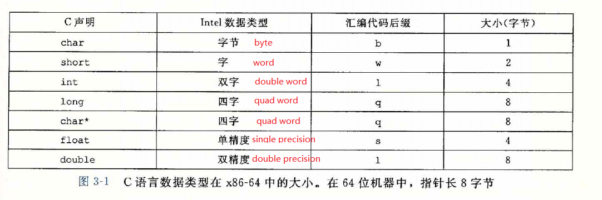

深入理解计算机系统·语雀
参考资料
一、计算机系统漫游
- hello程序执行过程
- shell中输入hello：字符串通过键盘IO，bus总线，存储到寄存器中，再由寄存器保存到主存中。
- 输入回车键：shell开始执行hello，通过DMA技术不经过CPU把磁盘中的hello程序直接加载到主存中。
- 处理器执行hello程序：将执行结果hello word复制到寄存器中，再从寄存器复制到显示设备，最终显示。
操作系统的抽象

进程是操作系统对一个正在运行程序的抽象，计算机科学中最重要最成功的的概念。
- 并发运行，不同进程的指令交错执行。大多数系统中，进程数一般多于运行它们的CPU个数。
- 一个CPU“同时执行”多个进程是通过CPU在进程间快速切换实现的，这种机制称为上下文切换。
- 上下文（context），操作系统保持跟踪进程运行的所有状态信息，包括PC、寄存器、主存内容。
- 上下文切换，即保存当前进程上下文，恢复新进程上下文，控制权转移给新进程，新进程从上次停止的地方开始。
- 上下文切换由操作系统内核（kernel）完成，内核是操作系统代码常驻内存的部分，它不是进程，是系统管理全部进程所用的代码和数据结构的集合，可以简单理解为常驻内存的数据。
- 虚拟内存（所有进程的代码都是从同一固定地址开始）
三、程序的机器级表示
实数在汇编代码里的后缀
数据传送指令：mov指令
- mov S, D：S内容复制到D
- S可以是立即数，内存地址，寄存器地址；
- D可以是内存地址，寄存器地址。
- S的D不能同时是内存地址
- movb：寄存器必须是1byte；movw：寄存器必须是2byte；movl：寄存器必须是4byte；movq：寄存器必须是8byte。
- 数据传送指令：movs。使用场景如，char的整形复制给int，1byte扩展成4byte
- C语言对应的汇编代码
| C语言 | 对应指令 |
|---|---|
| long dp; long sp; dp = (long) sp; |
movq (%rdi), %rax movq %rax, (%rsi) |
| int dp; char sp; dp = (int) sp; |
movsbl (%rdi), %eax movl %eax, (%rsi) |
| unsigned dp; char sp; dp = (unsigned int) sp; |
movsbl (%rdi), %eax movl %eax, (%rsi) |
| long dp; unsinged char sp; dp = (long) sp; |
movsbq (%rdi), %rax movq %rax, (%rsi) |
| char dp; int sp; dp = (char) sp; |
movl (%rdi), %eax movb %al, (%rsi) |
| unsigned char dp; unsigned sp; dp = (unsigned char) sp; |
movl (%rdi), %eax movb %al, (%rsi) |
| short dp; char sp; dp = (short) sp; |
movsbw (%rdi), %ax movw %ax, (%rsi) |
- 数据传送指令：pushq和popq
- push %rbp等价于如下汇编代码：
- subq $8, %rsp //%rsp值 - 8。
- movq %rbp, (%rsp) //8字节的%rbp的内容压栈。
- popq %rax 等价于如下汇编代码：
- movq (%rsp), %rax //把%rsp指向的内存地址的值赋给%rax
- addq $8, %rsp //%rsp值 + 8。
- 算术逻辑操作
- inc D //D += 1
- dec D //D -= 1
- neq D //D = -D
- not D //D = ~D
- add S D //D = D + S
- sub S D //D = D - S
- imul S D //D = D * S
- xor S D //D = D ^ S